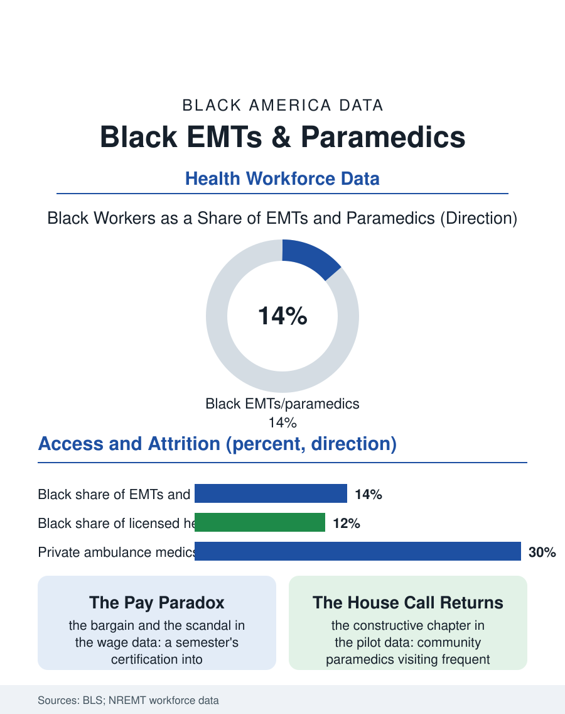

Black Employment
First Hands: Black EMTs and Paramedics
EMS is licensed health care's most representative workforce and its worst-paid license, staffing the street-level front door of every disparity in the health files. The EMS file.

The emergency medical technician and the paramedic are the health system's street-level clinicians, the first hands on the heart attack, the wreck, the overdose. Black workers hold roughly thirteen to fifteen of every hundred of these jobs in the federal counts, among the strongest Black shares in licensed health care, in an occupation whose pay is notoriously out of line with its responsibility. This article reads the EMS file.
The Cheapest License, the Heaviest Door
The entry economics explain the demographics before anything else does: EMT certification takes a semester at a community college or a fire academy, paramedic a year or two more, and the hiring runs through fire departments, municipal third services, hospital systems, and private ambulance companies whose recruiting is local and practical. The workforce that results looks like the cities it serves more faithfully than any other licensed health occupation, a fact every EMS medical director knows and the federal data confirm. The pay file then records the scandal the occupation is famous for: median wages that trail occupations of far less consequence, with the private ambulance segment, which handles the system's interfacility and much of its 911 volume in many counties, paying near the bottom of the health care wage table. The consequences saturate the workforce data: turnover that churns the private services annually, paramedics exiting to nursing, fire suppression, and the trades, and a two-tier system in which the fire-based services, unionized, pensioned, and increasingly paramedic-staffed, hold the occupation's good jobs, and access to them runs through the fire service's own competitive hiring, whose demographics this atlas's firefighter file records improving under examination and outreach systems.
The Work Itself
The call mix in Black neighborhoods is the disparity data arriving by radio: the cardiac arrests with the bystander CPR rates the health files document, the asthma calls, the diabetic emergencies, the violence the crews answer as the unarmed first service on scenes the other services stage away from. The clinical literature on EMS contains a specific and uncomfortable finding the file records plainly: pain assessment and analgesia in the field have shown racial patterning in several studies, as has the destination decision, which hospital, which door, that shapes the patient's whole trajectory, findings the modern EMS protocols, with their standardized assessments, are engineered to suppress by removing discretion from the moments where bias operates. The community paramedicine movement is the file's constructive chapter: paramedics deployed not for emergencies but for the frequent callers, the chronic disease patients whose 911 use is a care-coordination failure, visiting, reconciling medications, connecting services, with the pilot evaluations showing reduced transports and costs, and with Black paramedics' community knowledge functioning as the program's core technology in the neighborhoods where it works best. The pandemic and the overdose epidemic rewrote the job's risk file, naloxone becoming as standard as the defibrillator, and the workforce's own mental health, the cumulative exposure to the worst minutes of strangers' lives, emerging in the retention data as the occupation's deepest cost.
Status, Pay, and the Uniform's Pride
EMS occupies a strange rung in the public esteem data: trusted absolutely in the moment, compensated as an afterthought in the budget, classified in many jurisdictions as something less than essential in law, a designation the workforce campaigned against through the pandemic that had made the classification absurd in public. For Black medics the uniform carries the additional freight this atlas records in every uniformed file: authority and suspicion worn simultaneously in the neighborhoods they serve and come from, and a professional community, the associations of Black EMS providers, that has organized around both the workforce issues and the community CPR training mission, teaching the bystander skill in the barbershops and churches of the neighborhoods where the arrest data say it saves the most lives. The EMS file closes on the rig at the curb at shift change, the next crew checking the bags and the monitor, the whole apparatus of emergency medicine reduced to two people and a vehicle that a community college semester can qualify you to staff. That accessibility is the occupation's glory and its exploitation at once. The data say the country gets, in this workforce, far more than it pays for, and that Black Americans supply a disproportionate share of both the labor and the neighborhoods' need. The file's policy sentence writes itself, as it has in EMS's own journals for forty years: pay the license what the door it opens is worth.
More in Black Employment
The Black Unemployment Rate: The Two-to-One Pattern
Black unemployment runs at roughly twice the White rate — 5.5 percent against 3.3 percent in annual averages — a ratio stable across five decades of federal data. How it is measured and why it persists.
Black Median Weekly Earnings: The 80-Cent Ratio
Black full-time workers earn a median of about $900 a week — roughly 80 cents for every dollar White workers earn. The BLS earnings data by group, gender, and occupation.
Black Labor Force Participation: Working at National Rates
Black labor force participation runs at roughly the national rate — and Black women participate at higher rates than White women. The BLS participation data.
Source: U.S. Bureau of Labor Statistics, Current Population Survey; National Registry of Emergency Medical Technicians workforce data.